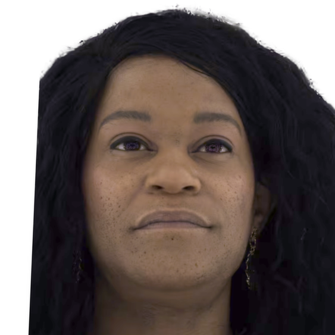
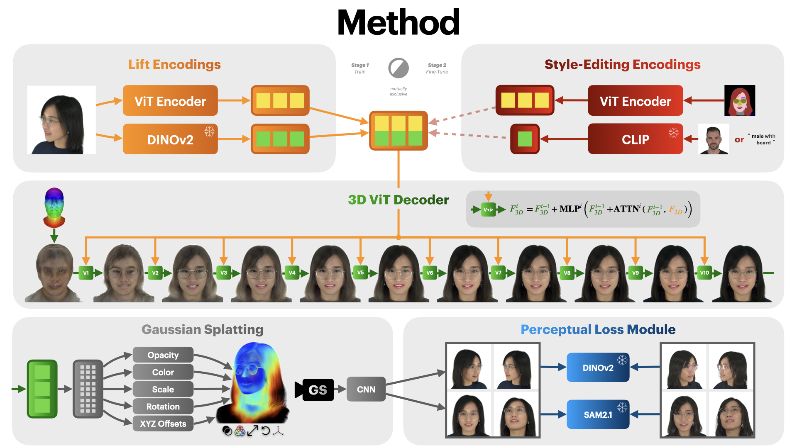
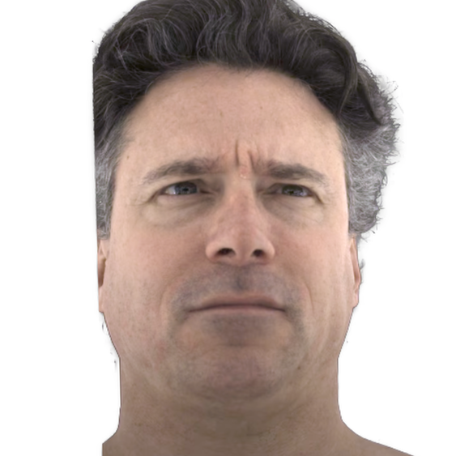
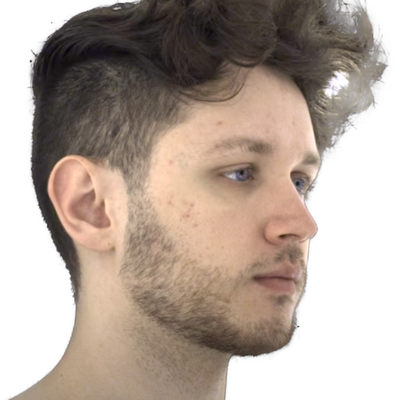
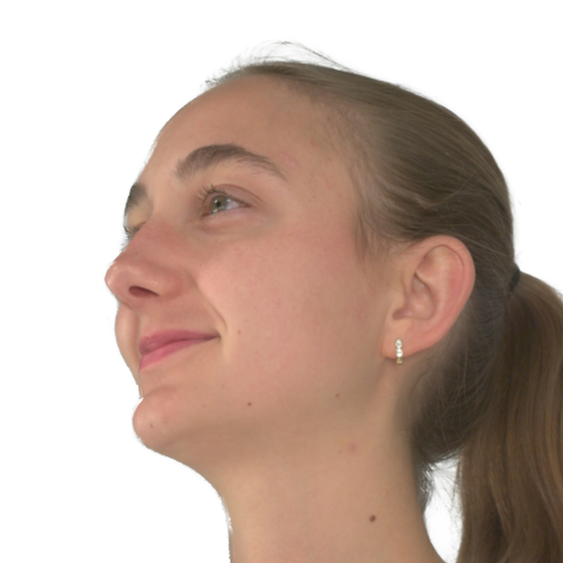
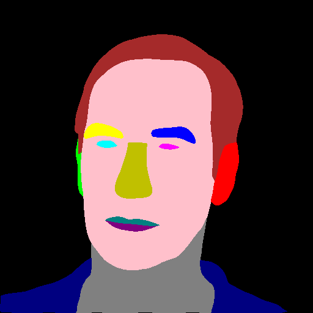
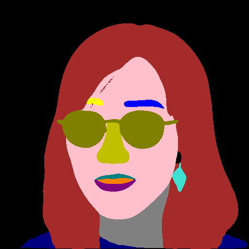
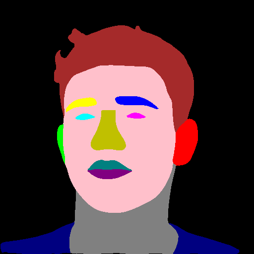
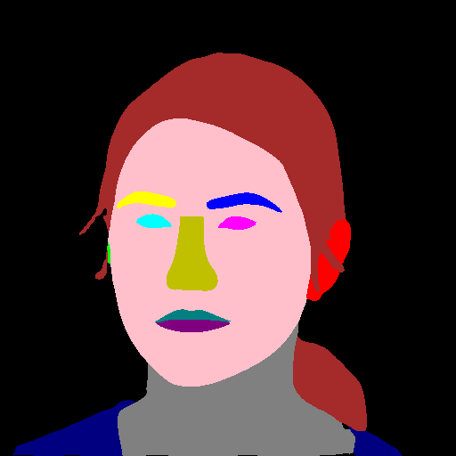

"female with curly hair"


Overview of Our Method. Our framework supports 3D Reconstruction from a single image and 3D Editing from a segmentation map and style input. Both tasks share a 3D ViT decoder that lifts 2D features via iterative cross-attention, differing only in the encoder. The reconstruction model uses a dual-branch encoder with DINOv2 and a task-specific ViT; the editing model uses a segmentation ViT and injects a global CLIP style token. Outputs are rendered via Gaussian Splatting and refined with a 2D CNN, with supervision from DINOv2 and SAM2.1.



Processing in the video is sped up.











